Learn Rust
Get started with Rust
Affectionately nicknamed “the book,” The Rust Programming Language will give you an overview of the language from first principles. You’ll build a few projects along the way, and by the end, you’ll have a solid grasp of the language.
Alternatively, Rustlings guides you through downloading and setting up the Rust toolchain, and teaches you the basics of reading and writing Rust syntax, on the command line. It's an alternative to Rust by Example that works with your own environment.
If reading multiple hundreds of pages about a language isn’t your style, then Rust By Example has you covered. While the book talks about code with a lot of words, RBE shows off a bunch of code, and keeps the talking to a minimum. It also includes exercises!
Documentation
Read the core documentation
All of this documentation is also available locally using the rustup doc command, which will open up these resources for you in your browser without requiring a network connection!
Comprehensive guide to the Rust standard library APIs.
Guide to the Rust editions.
A book on Rust’s package manager and build system.
Learn how to make awesome documentation for your crate.
Familiarize yourself with the knobs available in the Rust compiler.
In-depth explanations of the errors you may see from the Rust compiler.
Build your skills in an application domain
Learn how to build effective command line applications in Rust.
Use Rust to build browser-native libraries through WebAssembly.
Become proficient with Rust for Microcontrollers and other embedded systems.
Master Rust
Curious about the darkest corners of the language? Here’s where you can get into the nitty-gritty:

The Reference is not a formal spec, but is more detailed and comprehensive than the book.
Read the reference
The Rustonomicon is your guidebook to the dark arts of unsafe Rust. It’s also sometimes called “the ’nomicon.”
Read the ’nomicon
The Unstable Book has documentation for unstable features that you can only use with nightly Rust.
Read the unstable book